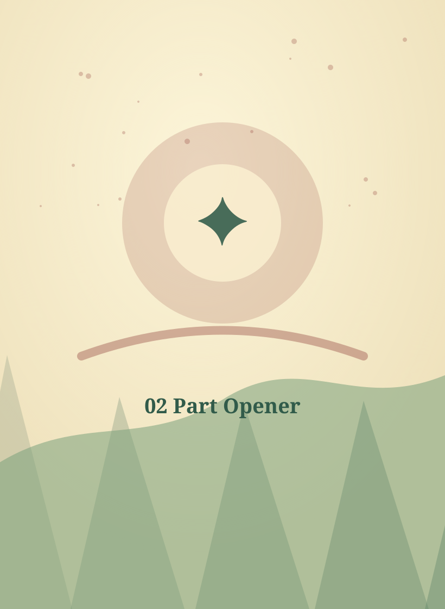

Adventures in Alba
Guide Book — How to run warm high-fantasy adventures for Adventurers 5–7, with examples and dialogue

Your job as Guide
The Guide is not the boss of fun. You describe the world, listen to adventurers, ask what they try, and help the dice turn ideas into surprises.
- Use short scenes: 5 to 12 minutes each.
- Give choices in twos or threes, not long menus.
- Name feelings before fights: scared, proud, sleepy, lonely, worried.
- Let adventurers succeed often. The fun is in how it happens.

Useful phrases
- “Yes, and what does that look like?”
- “Who are you helping?”
- “Which stat fits your idea?”
- “That is a wobble, so something funny changes.”
Picture → feeling → choice → roll only if exciting → warm change.

Scene recipe
1. A picture
Start with something adventurers can see: misty bridge, silver fox, giant teacup, glowing thistle.
2. A feeling
Pick one: worried, excited, lonely, sleepy, proud, grumpy, curious.
3. A choice
Offer two helpful directions: follow the bells or talk to the fox.
4. A roll
Only roll if the answer is exciting. Use Strength, Int, Agility, Wis, or Luck.
5. A change
After each scene, something should be different: a clue, friend, promise, opened path, or new question.


Running rolls and wobbles
Choosing the stat
- Use Strength for lifting, climbing, holding, pushing, or protecting.
- Use Int for puzzles, plans, facts, reading runes, or clever tricks.
- Use Agility for speed, balance, dodging, sneaking, or catching.
- Use Wis for feelings, nature, animals, and noticing what matters.
- Use Luck for charms, surprises, fairy bargains, and last chances.
Good wobbles
- A hat blows away.
- The map gets wet.
- A bell rings and wakes someone.
- A helpful creature misunderstands.
- A path opens, but it is muddy.

Building adventures
| Part | Question | Example |
|---|---|---|
| Hook | Who needs help? | A fairy cannot find the right door. |
| Path | Where must heroes go? | Across the heather bridge. |
| Friend | Who can help? | A shy fox with silver whiskers. |
| Puzzle | What needs a clever choice? | Three bells ring, but only one is kind. |
| Ending | How is the glen warmer now? | The lost moon-bell is returned. |

Tiny tables
What is strange here?
Use this when a scene needs one vivid magical detail.
| 1 | A thistle glows like a lantern. |
| 2 | Footprints turn into tiny flowers. |
| 3 | A crow speaks only in compliments. |
| 4 | The bridge asks for a joke. |
| 5 | A teacup storm rains indoors. |
| 6 | A sleeping troll snores bubbles. |
What does the creature want?
Give every encounter a want before it becomes a fight.
| 1 | A snack. |
| 2 | A song. |
| 3 | Someone to listen. |
| 4 | A lost button. |
| 5 | Help being brave. |
| 6 | A promise kept. |
How can it enter a scene?
Drop the creature into the map with one action.
| 1 | It blocks a path by accident. |
| 2 | It is crying quietly. |
| 3 | It has the clue but misunderstands it. |
| 4 | It challenges the heroes to a silly contest. |
| 5 | It asks for a promise. |
| 6 | It follows the heroes home. |

Scene dressing examples
What to put in a scene
- One clear picture: a bridge with mossy faces, a teacup storm, a silver fox in heather.
- One sound: bell, splash, snore, giggle, creak, whisper.
- One feeling: lonely, proud, worried, sleepy, curious, embarrassed.
- One useful object: rope, button, lantern, map, boot, key, ribbon.
- One choice: talk first or look closer; cross now or find a safer path.
Dialogue starters
- Bridge: “I will not open for stomping feet. I open for polite ones.”
- Sprite: “I am not lost. I am doing royal path inspection.”
- Brownie: “Hold still! Those boots have clues on them!”
- Fox: “A clever adventurer would notice the quiet puddle, and you look very clever.”
- Owl: “Young acorn, I remember the path. I forgot the name of remembering.”

Running dialogue with Adventurers
Offer two tones
“Do you ask gently, make a joke, or stand tall?” Adventurers often answer faster when the choices are emotional.
Repeat their idea proudly
Adventurer: “I give it a biscuit.” Guide: “Excellent. You offer the dragon a biscuit like a peace treaty.”
Make NPCs want something
Every speaker wants a snack, a promise, a name remembered, a path cleaned, a song, or help being brave.
Let wobbles talk
On a wobble, the creature misunderstands: “You said boot? I thought you said flute!” Then the scene keeps moving.

Using HP, MP, and enemy DR
| Number | Guide meaning | Example |
|---|---|---|
| HP | How long a creature can stay in a tense scene. | A troll with high HP can keep holding a log bridge while heroes help. |
| MP | How much fairy weirdness it can use. | A sprite spends MP to grow thistles or vanish in petals. |
| Level | How experienced or important it is. | A level 1 hare is a messenger; a level 4 hare might guard a moon gate. |
| DR | Difficulty Rating: a quick “how big is this encounter?” number. | DR 1–2 easy, DR 3–4 fair, DR 5+ big scene or boss. |

Ready scene examples
Scene: The Bootprint Road
Read aloud: “Golden bootprints glow in the mud. They walk in circles around a huge soggy boot. A muddy brownie waves a brush like a sword.”
- Ask: “Do you let it clean your boots, ask about the prints, or follow them?”
- Roll Wis to understand the brownie, Int to read the pattern, Agility to hop print to print.
- Wobble: the brownie cleans the map instead of the boots.
Scene: The Star Sheep
Read aloud: “A sheep made of cloud wool floats just above the hill. It bleats at a lonely star hiding behind a cloud.”
- Ask: “Do you sing, climb, shine a light, or ask what it lost?”
- Roll Luck for star magic, Wis for feelings, Strength to hold the kite-rope.
- Reward: the sheep makes a cloud bridge for one careful crossing.

Scenario from the Guide side: Bell-Root Path
What the adventurers see
Read aloud: The path is moss-soft. Tiny bells hang from sleepy roots. A fox dreams beside a moon-rune door.
What is really happening?
- The bells are an alarm, but also a puzzle.
- The fox is guarding the door because it lost the key.
- The silver acorn key is under the quietest root.
Checks to offer
| Idea | Stat | Result |
|---|---|---|
| Step around bells | Agility | Reach the door quietly. |
| Untie bells | Int | Learn which root hides the key. |
| Talk to fox | Wis | Fox admits it is worried. |
| Hold branch | Strength | Friend gets +1. |
| Lucky button | Luck | Find the quietest root. |

Scenario from the Guide side: Bramble combat
Scene purpose
This is a combat scene that teaches danger without cruelty. The Bramble Sneak wants its shiny bell back and uses thorns to look bigger than it feels.
Creature plan
- Round 1: block the path and shout.
- Round 2: use Thorn Tangle if adventurers rush.
- At half HP: admit the bell is important.
- At 0 HP: tangled, tired, and ready to bargain.
Guide moves
| Move | Use when | Safe result |
|---|---|---|
| Thorn Tangle | A hero runs straight in. | 2 HP and stuck cloak. |
| Shiny Distraction | Someone shows treasure. | It pauses; next hero gets +1. |
| Cap Snag | On a wobble. | Its cap catches and reveals fear. |

More ready dialogue
Gate with a voice
Read aloud: “The gate yawns. Password? it asks. Or snack-word. I accept both.” Use Int for clues, Luck for guessing, Wis for asking what it wants.
Proud tiny ruler
Sprite: “I decree that all heroes must admire my crown.” Good replies include compliments, jokes, drawing a flag, or asking if the sprite is lonely.
Helpful shopkeeper
Shopkeeper: “Copper buys rope, silver buys a kit, gold buys a favour, and mythral buys a legend. Spend kindly.”
Creature at 0 HP
Do not narrate harm. Say: “The creature is tired, muddy, and ready to listen.” Then offer help, promise, snack, or rest.

Guide depth: boss scenes and safety
Boss scene shape
- Show the scary picture safely: shadow, noise, weather, big feelings.
- Give the creature a want that can be discovered.
- Use HP to pace attention; use MP for special moves.
- At half HP, reveal the softer truth.
- At 0 HP, offer a bargain, apology, nap, or rescue.
Safety dials
| If players are nervous | If players want more |
|---|---|
| Lower HP by 3. | Add a second objective. |
| Make special attacks cost +1 MP. | Let the creature change the map. |
| Have an NPC friend offer a hint. | Add a countdown: three bells before fog. |